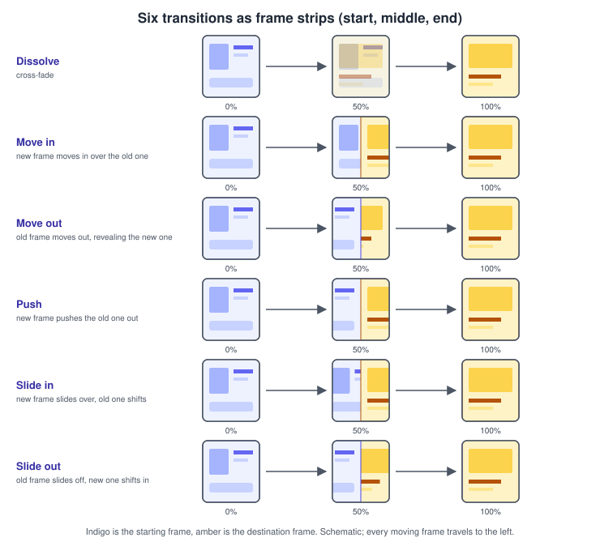
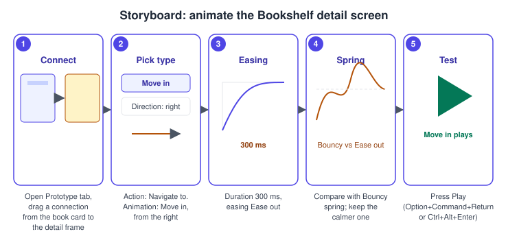
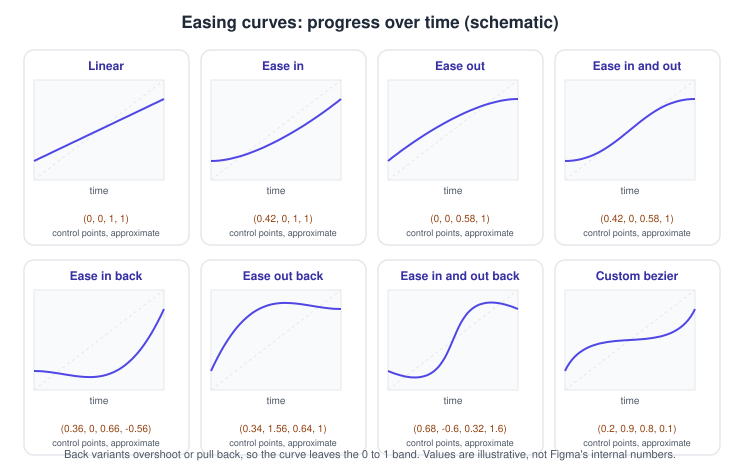
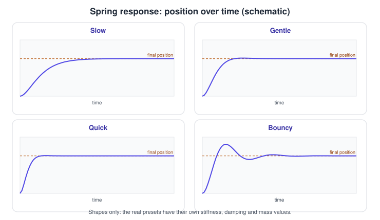
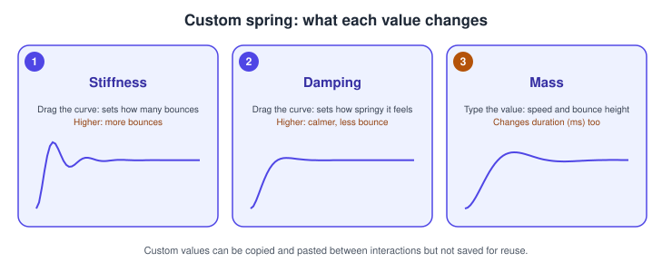

Transitions, Easing and Springs
|
This content was generated with the assistance of AI and should be verified against the official documentation before being relied on in production. |
This page was written on 2026-10-30 against the UI3 interface of Figma Design. Prototype transitions, easing and spring animations are generally available on all plans, and setting them needs edit access to the file, which in practice means a Full seat. Viewing a prototype needs no more than view access. Here the focus is how a connection animates; creating the connection itself, triggers and actions are on Prototyping Basics, layer matching for Smart animate is on Smart Animate, and keyframe timelines are on Figma Motion.
The running example is the Bookshelf app. Tapping a book card opens the detail screen. With no animation the screen simply replaces the previous one; with a transition, an easing curve or a spring, the movement tells the reader where the new screen came from and how heavy or light the interface feels.
The model
A transition is the animation played when a connection navigates (or swaps an overlay) from one frame to another. Three independent choices shape it:
-
Transition type: what moves. Instant, Dissolve, Move in, Move out, Push, Slide in, Slide out and Smart animate are the names used in the prototype settings. Whether a type exposes direction buttons depends on the type; check them in your app.
-
Duration: how long it lasts, in milliseconds.
-
Easing: how speed changes during that time. Either a bezier curve (preset or custom) or a spring.

Where it lives in UI3
Select the source layer or frame, open the Prototype tab of the right sidebar, and click an interaction to edit it. The interaction details hold the trigger and the action. For navigation actions the Animation settings are the part this page describes: the transition type, its direction where one is offered, the easing and the duration. Hovering the preview inside the interaction details plays the animation. Use Present (the play button in the toolbar) to run the whole prototype.
Opening a prototype in a new tab is bound to a keyboard shortcut (Option Command Return on macOS, Ctrl Alt Enter on Windows, at the time of writing); confirm it in the shortcut list of your app, because shortcuts can change.
The transition types
-
Instant: no animation; the destination appears at once.
-
Dissolve: the old frame cross-fades into the new one. Smart animate falls back to a dissolve when it cannot match layers.
-
Move in and Slide in: the destination frame enters above the original frame. The Figma help describes both as bringing the destination in above the original frame. Move out and Slide out are their counterparts for leaving.
-
Push: the destination pushes the original frame out of the way, so both move.
-
Smart animate: matching layers in the two frames animate between their properties instead of the frames as wholes; unmatched layers use a fallback. Because it is about layer names and hierarchy, it has its own page: Smart Animate. To combine another transition with it, the interaction details offer a "Smart animate matching layers" option.
Which types accept easing and a duration is not spelled out in the help article for every type, so test each one in your app: the Figma documentation states clearly that Smart animate takes easing and duration.

Easing curves
Easing describes how the animation’s progress changes over time. The preset bezier curves in the Figma help are: Linear, Ease in, Ease out, Ease in and out, Ease in back, Ease out back and Ease in and out back.
-
Linear: constant speed. It feels mechanical.
-
Ease in: starts slowly and speeds up. Suited to things leaving the screen.
-
Ease out: starts fast and slows down. Suited to things arriving, because the eye can settle on the result.
-
Ease in and out: slow, fast, slow.
-
Back variants: add anticipation (a small pull back before moving), overshoot (going past the target and returning), or both. Ease in and out back creates an anticipatory move at the start and a rebound before the final state.

Custom bezier
Choose Custom bezier in the curve menu to edit the curve by dragging its handles or typing four numbers. The curve’s start and end are fixed at (0, 0) and (1, 1), and the numbers correspond to the arguments of the CSS function cubic-bezier(x1, y1, x2, y2). A curve can extend beyond the graph’s edges to create anticipation or rebound. A custom curve cannot be saved for reuse, but its numbers can be copied and pasted to other interactions.
/* the same numbers can be reused in code */
.detail-screen {
transition: transform 300ms cubic-bezier(0.2, 0.9, 0.3, 1);
}The values above are an example, not a Figma preset. Source: Figma Learn: Prototype easing and spring animations
Springs
A spring replaces a fixed curve with a physical simulation, so the movement can settle, overshoot or wobble. The presets are Gentle, Quick, Bouncy and Slow, plus Custom.

A custom spring exposes three values:
-
Stiffness: influences the number of bounces. Adjust it by dragging the graph.
-
Damping: influences how springy the animation is. Adjust it from the graph.
-
Mass: influences the speed of the animation and the height of the bounce. Type it manually; changing it also changes the duration shown in milliseconds.

Springs have no single fixed duration the way a bezier does, which is why changing mass is reflected in the millisecond value. Figma’s engineering blog describes building on the WebKit spring solver and simplifying the controls to handles on the curve (How Figma put the bounce in spring animations).
Procedures on the Bookshelf scenario
Animate the book-card to detail navigation
-
Open the Bookshelf file and the Prototype tab in the right sidebar.
-
Select the "The Hobbit" book card and drag the connection handle to the detail frame, or open the existing interaction.
-
Keep the trigger as On click and the action as Navigate to.
-
In the animation settings choose Move in and, where direction buttons are offered, pick the direction from the right so the detail screen arrives as if pushed from the side.
-
Set the easing to Ease out and the duration to 300 ms.
-
Hover the preview in the interaction details to check the motion, then present the prototype and click the card.
Replace the curve with a spring
-
Open the same interaction and change the easing from Ease out to a spring preset.
-
Try Quick, then Bouncy. Bouncy overshoots the final position; for a reading app, Quick or Gentle is usually the calmer choice.
-
For a custom feel, choose Custom and drag the graph (stiffness and damping), then type a mass value and watch the duration update.
-
Copy the numeric values, select the "Add to shelf" button interaction and paste them so both interactions feel the same.
Choosing well and pitfalls
-
Match the transition to meaning: Push and Slide suggest hierarchy and direction, Dissolve suggests a change without spatial relation, Instant suits tab switches.
-
Keep durations short for frequent actions. The Figma help suggests a longer duration while building the prototype so you can see what is happening; shorten it again before testing with people.
-
Overshoot and bouncy springs draw attention; use them sparingly and offer an alternative for people who prefer reduced motion (see Accessible and Inclusive Design).
-
A prototype animation previews intent. The code that ships uses the platform’s own animation system, so hand off the numbers (duration, curve, spring values) as described on Dev Mode.
-
Smart animate silently falls back to a dissolve when layers do not match.
Where older guides are outdated
Guides written for the pre-UI3 interface (the 2022 and 2024 books) show the old interface and the interaction details dialog of that period. UI3 has been the only interface since 2025-04-30. The trigger "Mouse move inside/outside" was renamed "Mouse enter/leave". Those books also predate Figma Motion, which in 2026 added a keyframe timeline for animation beyond prototype transitions; see Figma Motion.